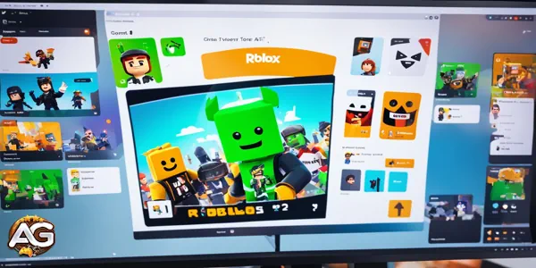
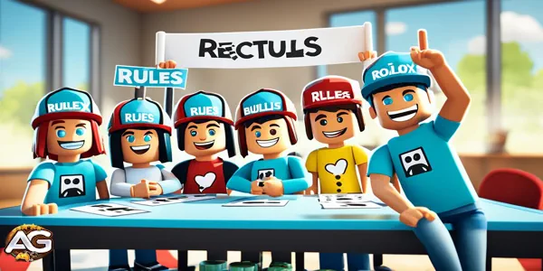

Descubra como obter chat de voz no Roblox com nosso guia fácil. Desbloqueie novas formas de comunicação e melhore sua experiência de jogo na popular plataforma.
Roblox é uma grande plataforma de jogos online que mudou a forma como nos comunicamos em mundos virtuais. Agora possui chat de voz, o que torna os jogos ainda melhores. Você pode planejar com sua equipe, conversar com amigos ou simplesmente falar mais no jogo. Este guia mostrará como usar o chat de voz no Roblox facilmente.
Pontos Principais
A funcionalidade de chat de voz do Roblox permite a comunicação em tempo real com outros jogadores, melhorando a experiência de jogo.
Configurar o chat de voz no Roblox é um processo simples, que requer apenas alguns passos nas configurações do jogo.
Configurar o microfone e as configurações de áudio é crucial para um desempenho ideal do chat de voz.
Entrar em canais de voz e encontrar jogos que suportam chat de voz são importantes para aproveitar esta funcionalidade.
Manter uma etiqueta adequada e seguir as diretrizes é essencial para criar um ambiente de chat de voz positivo e respeitoso.
Ilustração: Como Obter Chat de Voz no Roblox.
Introdução ao Chat de Voz no Roblox
Roblox é um site de jogos online popular. Ele cresceu e adicionou novos recursos, como o chat de voz. Este recurso mudou a forma como os jogadores conversam e se conectam no Roblox, tornando os jogos mais divertidos e sociais.
A Importância da Comunicação por Voz nos Jogos
O chat de voz no Roblox mudou o jogo para os jogadores. Permite que eles conversem em tempo real. Isso significa que podem planejar estratégias, compartilhar dicas e fazer amigos facilmente.
Isso torna os jogos mais emocionantes e constrói uma comunidade forte. Não se trata apenas de jogar; trata-se de se conectar com os outros.
Visão Geral do Recurso de Chat de Voz do Roblox
O chat de voz do Roblox permite que os jogadores conversem como nunca antes. Eles podem conversar, dar conselhos ou apenas se divertir enquanto jogam. É fácil de usar e pode ser configurado para se adequar ao gosto de cada jogador.
Este recurso também ajuda os criadores de jogos e de conteúdo. Eles podem adicionar chat de voz em tempo real aos seus jogos. Isso torna os jogos mais divertidos e interativos para todos.
"A integração do chat de voz no Roblox revolucionou a maneira como os jogadores interagem e se comunicam, fomentando um senso de comunidade que transcende o reino digital."
Pré-requisitos para Usar o Chat de Voz no Roblox
Para usar o chat de voz no Roblox, você precisa de algumas coisas. Você deve ter o hardware e software adequados. Isso garante que você tenha uma boa experiência de chat de voz.
Requisitos de Hardware para Chat de Voz no Roblox
Você precisa de um microfone ou headset para o chat de voz no Roblox. Muitos tipos de microfones funcionam, como USB, 3,5mm e de laptop. O hardware de chat de voz do Roblox deve fornecer som claro e funcionar bem.
Configuração do Microfone no Roblox
Certifique-se de que seu microfone ou headset esteja conectado ao seu dispositivo, como um computador ou telefone.
Ajuste o volume do microfone e a posição dele para obter o melhor som e menos ruído.
Verifique se seu microfone está funcionando corretamente no aplicativo Roblox.
Requisitos de Software para Chat de Voz no Roblox
Você também precisa configurar sua conta e dispositivo Roblox corretamente. Isso significa:
Ativar o Chat de Voz nas configurações do Roblox.
Permitir que o Roblox use seu microfone e som.
Desativar qualquer configuração de som extra que possa interferir no seu chat.
Certifique-se de atender aos requisitos de chat de voz do Roblox. Assim, você pode entrar facilmente nos chats por voz do Roblox.
Requisitos de Hardware
Requisitos de Software
Microfone ou headset compatível
Conexão adequada do dispositivo de entrada de áudio
Configurações otimizadas do microfone
chat de voz ativado na conta do Roblox
Permissões de microfone concedidas ao Roblox
Configurações de áudio do dispositivo otimizadas
"Garantir que seus requisitos de chat de voz do Roblox sejam atendidos é o primeiro passo para uma comunicação por voz perfeita e envolvente no jogo."
Como Obter Chat de Voz no Roblox
O recurso de chat de voz do Roblox torna o jogo mais divertido, permitindo que você converse com amigos em tempo real. É ótimo para planejar, compartilhar novidades ou simplesmente conversar. Vamos mostrar como configurar o chat de voz no Roblox para a melhor experiência.
Ativando o Chat de Voz nas Configurações do Roblox
Aqui está como ativar o chat de voz nas configurações do Roblox:
Abra o aplicativo Roblox no seu dispositivo.
Clique no ícone de engrenagem no canto superior direito para acessar as configurações.
Vá para a aba "Áudio" nas configurações.
Encontre a opção "chat de voz" e ative-a.
Clique em "Concluído" para salvar suas alterações.
Configurando o Microfone e as Configurações de Áudio
Certifique-se de que seu microfone e áudio estejam configurados corretamente para o chat de voz. Aqui está o que fazer:
Nas configurações de "Áudio", escolha seu microfone no menu suspenso.
Ajuste o volume do microfone para se ouvir claramente.
Fale no seu microfone e verifique o medidor de áudio para garantir que ele funcione.
Se tiver problemas com o microfone, verifique as configurações ou as páginas de suporte do Roblox para obter ajuda.
Siga estes passos para como habilitar o chat de voz no roblox, configurações de chat de voz do roblox e configuração de chat de voz do roblox. Você terá um ótimo tempo conversando com amigos no Roblox.
Recurso
Descrição
Ativação do chat de voz
Ativar ou desativar o recurso de chat de voz nas configurações do Roblox.
Seleção de Microfone
Escolher o dispositivo de microfone apropriado entre as opções disponíveis.
Volume do Microfone
Ajustar o volume do microfone para garantir níveis de entrada de voz ideais.
Monitoramento de Áudio
Usar o medidor de áudio para testar e monitorar o desempenho do microfone.
"Ativar o chat de voz no Roblox é uma mudança de jogo, permitindo comunicação em tempo real sem interrupções e melhorando a experiência geral de jogo."
Siga estes passos para configurar seu como habilitar o chat de voz no roblox, configurações de chat de voz do roblox e configuração de chat de voz do roblox. Você terá uma experiência de jogo melhor no Roblox.
Entrando em um Canal de Voz
Entrar em um canal de voz no Roblox é fácil. Isso permite que você converse com outros jogadores em tempo real. Isso melhora seu jogo e ajuda você a trabalhar com sua equipe em jogos que têm chat de voz.
Encontrando Jogos com Suporte a Chat de Voz
Para entrar em um canal de voz, encontre um jogo do Roblox que permita o chat de voz. Nem todos os jogos têm isso, mas muitos populares, como Jailbreak, Arsenal e Tower of Hell, têm.
Procure o ícone de chat de voz na descrição do jogo ou no lobby para encontrar jogos com chat de voz. Você também pode perguntar a outros jogadores ou verificar fóruns online para obter as informações mais recentes.
Abra o jogo Roblox que você deseja entrar.
Procure o ícone ou rótulo de chat de voz nos detalhes ou lobby do jogo.
Se o jogo tiver chat de voz, você verá uma opção "Entrar no Canal de Voz".
Clique nessa opção para entrar no canal de voz.
Depois de entrar no canal de voz, você pode conversar com outros jogadores em tempo real. Isso torna seu jogo mais divertido e ajuda sua equipe a trabalhar melhor juntos.
Jogo
Suporte a chat de voz no Roblox
Jailbreak
Sim
Arsenal
Sim
Tower of Hell
Sim
Confira os jogos do Roblox com chat de voz para tornar sua experiência mais interativa e divertida. Você trabalhará melhor com seus amigos e se divertirá jogando juntos.

Melhores Práticas para Usar o chat de voz no Roblox.
Melhores Práticas para Usar o Chat de Voz no Roblox
A comunidade do Roblox adora usar o chat de voz. Isso torna os jogos mais divertidos e interativos. Aqui estão algumas dicas para garantir que todos se divirtam. Essas dicas ajudarão você a usar bem a etiqueta do chat de voz do Roblox. Você será um ótimo usuário de chat de voz.
Mantenha uma Etiqueta Apropriada para o Microfone
Certifique-se de que seu microfone esteja na posição correta. Isso ajuda sua voz a sair clara e corta o ruído de fundo.
Mantenha o volume adequado. Deve ser alto o suficiente para ouvir, mas não muito alto. Isso torna confortável para os outros ouvirem.
Tente encontrar um lugar tranquilo para conversar. Isso ajuda a evitar distrações e sons indesejados.
Dicas para Usar o Chat de Voz no Roblox
Fale claramente e com confiança. Mas não grite nem seja grosseiro.
Seja gentil e não use palavras ofensivas ou aja de maneira inadequada. Todos devem se sentir bem-vindos.
Ouça sua equipe e responda a eles. Isso ajuda todos a trabalharem melhor juntos.
Mantenha uma atitude positiva e amigável. Um clima feliz torna os jogos mais divertidos para todos.
Seguindo estas diretrizes do chat de voz do Roblox, o chat de voz será melhor para todos. Um pouco de consideração e consciência pode tornar a comunidade de jogos mais agradável e divertida.
"O verdadeiro poder dos jogos vem não apenas do próprio jogo, mas das conexões e da comunidade que construímos ao longo do caminho. O chat de voz no Roblox é uma ferramenta que pode nos ajudar a fortalecer esses laços e criar uma experiência de jogo mais envolvente, colaborativa e memorável."
Etiqueta e Diretrizes para o Chat de Voz
A comunidade do Roblox adora usar o chat de voz. É importante manter o chat positivo e respeitoso para todos. As regras do chat de voz do Roblox, a conduta do chat de voz do Roblox e as diretrizes da comunidade do chat de voz do Roblox ajudam todos a se darem bem e se divertirem.
Manter um Ambiente Positivo e Respeitoso
Quando você conversa no Roblox, conhece jogadores de todo o mundo. Aqui estão algumas dicas para fazer todos se sentirem bem-vindos:
Seja gentil e educado com todos, não importa quem sejam.
Não use palavrões ou discurso de ódio. Isso faz os outros se sentirem mal.
Não cause problemas gritando ou interrompendo os outros.
Proteja a privacidade dos outros e não compartilhe segredos sem pedir.
Considere o volume da sua voz para não incomodar os outros.
Seguindo essas regras do chat de voz do Roblox, o chat será um lugar melhor. Isso permite que todos se sintam seguros para conversar e se conectar.
"O recurso de chat de voz do Roblox é uma ferramenta poderosa para construir conexões, mas exige um compromisso compartilhado com o respeito e a civilidade. Vamos trabalhar juntos para criar uma comunidade onde todos possam se sentir ouvidos e valorizados."
As diretrizes da comunidade do chat de voz do Roblox garantem que todos se divirtam no Roblox. Sendo atencioso, você ajuda a tornar o jogo um lugar onde todos se sintam bem-vindos e valorizados.

Obtendo Chat de Voz no Roblox.
Como Obter Chat de Voz no Roblox
Obter chat de voz no Roblox muda o jogo para os jogadores. Permite que você converse com sua equipe, compartilhe a emoção ou apenas converse com amigos. Vamos mostrar como ativar e configurar o chat de voz no Roblox.
Ativando o Chat de Voz nas Configurações do Roblox
Para começar a usar o chat de voz no Roblox, siga estes passos:
Abra o aplicativo Roblox no seu dispositivo.
Clique no ícone de engrenagem no canto superior direito para acessar as configurações.
Encontre a seção "Áudio" e ative "chat de voz".
Certifique-se de que seu microfone está funcionando testando-o nas configurações do Roblox.
Entrando em um Canal de Voz
Após ativar o chat de voz, você está pronto para entrar em um canal de voz. Veja o que fazer:
Entre em um jogo do Roblox que tenha chat de voz.
Encontre o ícone de chat de voz, um símbolo de microfone, no jogo.
Clique ou toque no ícone de chat de voz para entrar em um canal.
Ajuste seu volume e microfone para obter o melhor som.
Esses passos simples ajudarão você a usar o chat de voz no Roblox. Isso melhora o jogo e ajuda você a conversar com os outros.
Passo
Ação
1
Abra o Roblox e vá para o menu Configurações
2
Encontre a seção "Áudio" e ative "Chat de Voz"
3
Teste seu microfone para garantir que está funcionando corretamente
4
Entre em um jogo do Roblox com chat de voz
5
Encontre o ícone de chat de voz e clique/toque para entrar em um canal
6
Ajuste o volume e o microfone conforme necessário
Siga esses passos para ativar o chat de voz no Roblox facilmente. Isso melhora o jogo e ajuda você a conversar com os outros.
"O chat de voz é uma mudança de jogo para o Roblox, permitindo que os jogadores se conectem e colaborem de maneiras novas e mais imersivas."
Resolvendo Problemas Comuns de chat de voz
Ter problemas com o chat de voz no Roblox pode ser muito frustrante. Mas estamos aqui para ajudar! Vamos analisar os problemas mais comuns de chat de voz e como resolvê-los.
Resolvendo Problemas de Áudio e Microfone
Muitos usuários têm problemas com áudio ruim ou não conseguem usar o microfone. Se você está tendo problemas com o chat de voz do Roblox não funcionando ou problemas com o microfone do chat de voz do Roblox, veja o que fazer:
Verifique as configurações do seu microfone: Certifique-se de que seu microfone está conectado e configurado como padrão no Roblox.
Teste seu microfone: Use uma ferramenta como o Gravador de Voz do Windows para verificar se seu microfone funciona.
Ajuste o volume e a sensibilidade do microfone: Se sua voz estiver muito baixa ou distorcida, tente alterar as configurações.
Atualize seus drivers de áudio: Drivers de áudio antigos ou incorretos podem causar problemas. Procure por atualizações.
Feche aplicativos em segundo plano: Muitos aplicativos podem deixar seu sistema lento e afetar o chat de voz. Feche o que não precisar.
Problema
Causa Possível
Solução
chat de voz do Roblox não funcionando
Microfone não selecionado ou configurado corretamente
Verifique as configurações do microfone e certifique-se de que está selecionado como dispositivo de entrada padrão
Problemas com o microfone do chat de voz do Roblox
Drivers de áudio desatualizados ou incompatíveis
Atualize os drivers de áudio para a versão mais recente
Má qualidade de áudio
Problemas de volume ou sensibilidade do microfone
Ajuste as configurações de volume e sensibilidade do microfone
Seguindo esses passos de solução de problemas do chat de voz do Roblox, você resolverá problemas comuns de áudio e microfone. Você voltará a desfrutar de um chat de voz suave no Roblox.
Chat de Voz e Controle dos Pais
À medida que o Roblox se torna mais popular, os pais se preocupam com a segurança de seus filhos no chat de voz. Mas o Roblox tem controles parentais fortes para manter as crianças seguras e felizes.
Priorizando a Segurança com os Controles Parentais do Roblox
Os controles do Roblox ajudam a gerenciar o chat de voz. Os pais podem ativar ou desativar o chat de voz para seus filhos. Isso permite que escolham o quanto de conversa é aceitável.
Os pais também podem limitar o chat de voz apenas para amigos ou pessoas confiáveis. Isso é ótimo para crianças pequenas que não devem conversar com estranhos online.
Empoderando os Pais com Ferramentas de Monitoramento e Denúncia
O Roblox permite que os pais observem e verifiquem as conversas por voz de seus filhos. Eles podem ver sobre o que seus filhos falam. Isso ajuda os pais a saberem o que está acontecendo.
O Roblox também tem uma maneira para os pais denunciarem comportamentos inadequados no chat de voz. A equipe do Roblox investiga essas denúncias e mantém o jogo seguro.
Promovendo uma Experiência Positiva e Respeitosa no chat de voz
O chat de voz do Roblox é feito para conversas respeitosas. As regras são claras para todos. Isso torna o jogo divertido e seguro para todos.
Com essas ferramentas, os pais podem manter seus filhos seguros no chat de voz do Roblox para crianças. É uma maneira segura e divertida para toda a família jogar juntos.
No final, os controles parentais do chat de voz do Roblox mostram que o Roblox se preocupa com a segurança. Com essas ferramentas, os pais podem confiar que seus filhos usarão o chat de voz do Roblox. Isso torna o jogo divertido e positivo.
Explorando Recursos Avançados do Chat de Voz
O Roblox está melhorando e, com isso, seu chat de voz também. Agora, possui recursos legais que permitem aos usuários melhorar seu chat de voz. Você pode usar o push-to-talk e definir suas próprias teclas de atalho para o chat de voz.
Push-to-Talk e Personalização de Teclas de Atalho
Um grande recurso nos recursos avançados do chat de voz do Roblox é o push-to-talk. Ele permite que você ligue ou desligue seu microfone facilmente. Isso impede que sons indesejados entrem no seu chat.
Você também pode definir suas próprias teclas de atalho para o chat de voz no Roblox. Isso significa que você pode silenciar seu microfone, alterar o volume ou mudar de canal com apenas um pressionar de tecla. Isso torna o chat mais fácil e menos distraído enquanto você joga.
Os jogadores adoram as opções de push-to-talk do chat de voz do Roblox e de teclas de atalho. Elas dão mais controle sobre as conversas nos jogos. Isso torna o chat mais fluido e ajuda os jogadores a trabalharem melhor juntos.
"As opções de push-to-talk e personalização de teclas de atalho no chat de voz do Roblox foram uma mudança de jogo para mim. Agora posso me concentrar no jogo sem me preocupar com ruídos de fundo ou ativar meu microfone acidentalmente. É um recurso simples, mas poderoso, que melhorou minha experiência de jogo geral."
O Roblox continua a melhorar seu chat de voz para todos. Com esses novos recursos, está liderando no chat de voz em jogos. Os jogadores podem conversar melhor e se conectar com os outros em seus jogos.
Atualizações Futuras e Melhorias para o Chat de Voz do Roblox
O Roblox está sempre melhorando e adicionando novas coisas. A equipe está trabalhando duro para tornar o chat de voz melhor para todos. Eles têm um plano para adicionar novos recursos em breve.
Estão adicionando tecnologia de áudio avançada para melhores conversas por voz. Isso significa menos ruído e vozes mais claras. Os jogadores ouvirão uns aos outros mais claramente, mesmo em jogos movimentados.
Também estão pensando em permitir que os jogadores ajustem suas configurações de chat de voz. Você poderá alterar como sua voz soa ou adicionar sons divertidos ao seu jogo. Isso tornará jogar Roblox ainda mais divertido para todos.
Deixe Sua Opinião!
Você gostou das nossas dicas sobre Chat de Voz no Roblox? Há algo que não entendeu ou gostaria de sugerir mudanças? Convidamos você a se juntar à nossa sessão de comentários na página do Alexandre Games Blog. Não hesite em expressar sua opinião, clarificar suas dúvidas e compartilhar sua sugestões. Clique no botão abaixo para começar:
Carregando comentários... Aguarde
Explore novas habilidades com nossos guias em destaque!

 Fuja da Instalação Dicas infalíveis.
Fuja da Instalação Dicas infalíveis. Rosto de Homem do Roblox
Rosto de Homem do Roblox Tutorial de Murder Mystery Roblox
Tutorial de Murder Mystery Roblox